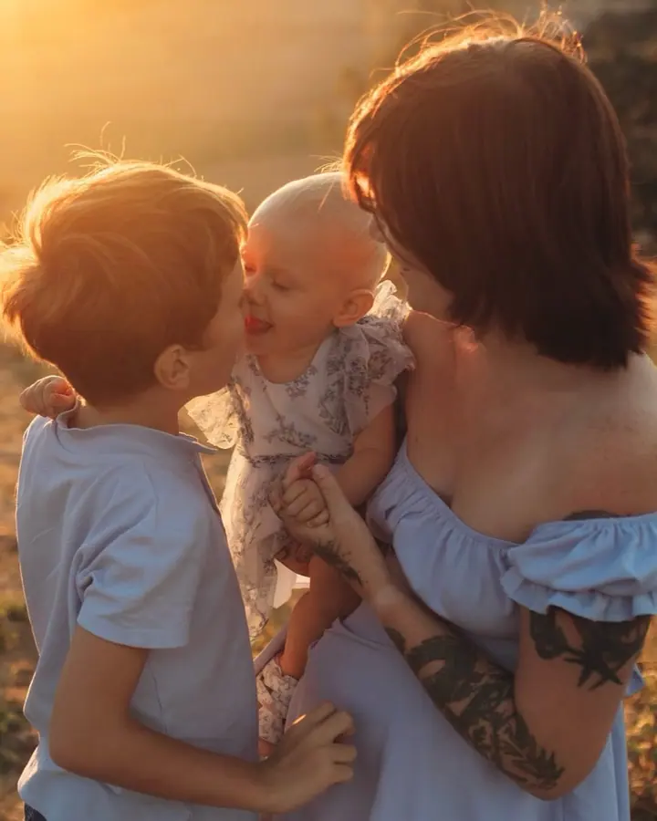
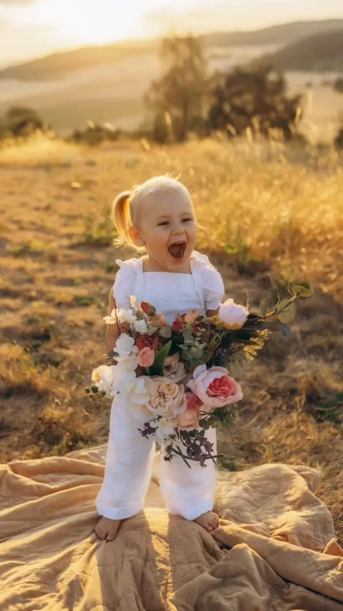
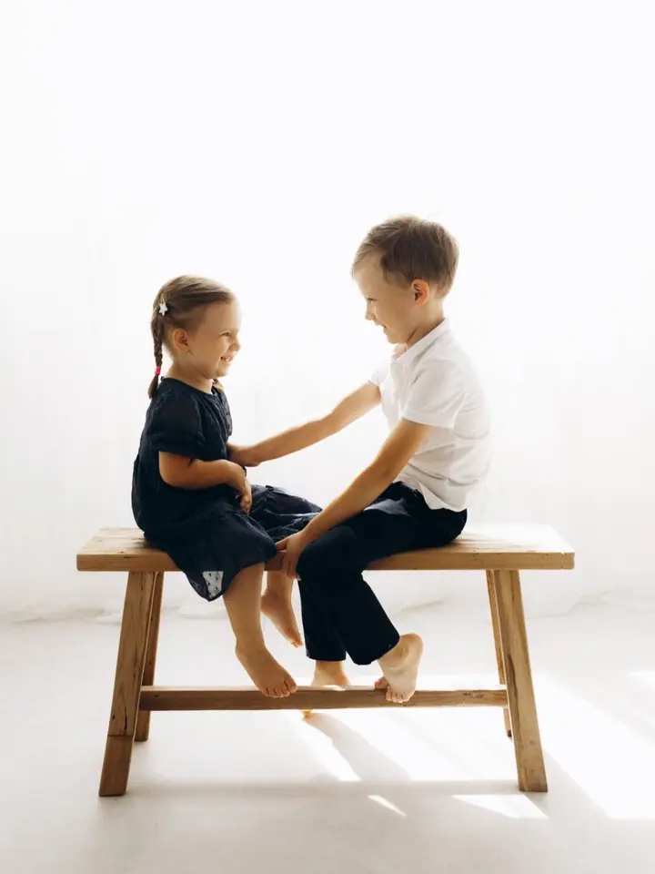

Rodinné focení
Společné chvíle s rodinou v přírodě, u vás doma nebo v ateliéru. Fotím přirozeně, citlivě a s důrazem na vztahy mezi vámi.

Jmenuji se Zdeňka a fotím rodiny, novorozence i svatby v Brně a okolí. Nejraději zachycuji přirozené momentky a skutečné vztahy, aby pro vás fotky nebyly jen krásné na p…
Rezervovat termínJsem nadšenec do fotografie, věčný optimista, srdcař a dobrodruh. Několik let jsem žila v Itálii a Londýně, a proto ráda fotím i zahraniční klienty. Ráda cestuji, sportuji a mám ráda, když se pořád něco děje.


Fotím přirozeně, citlivě a s důrazem na emoce. Ke každému focení přistupuji individuálně a s respektem k vašemu příběhu. Místa focení vybírám pečlivě, abyste se na nich cítili uvolněně a sami sebou.
Ráda vás přivítám ve svém ateliéru na Zábrdovické v Brně, nebo se potkáme venku v přírodě. Svatby v Brně a okolí fotím už necelých 9 let a pokaždé mě fascinuje, jak je každá z nich jiná.
Co fotím
Společné chvíle s rodinou v přírodě, u vás doma nebo v ateliéru. Fotím přirozeně, citlivě a s důrazem na vztahy mezi vámi.
Jemné focení novorozenců, ke kterému se budete i po letech rádi vracet. Pro nejmenší miminka mám k dispozici newborn oblečení.
Čekání na miminko v ateliéru nebo venku. Nastávajícím maminkám ráda zapůjčím šaty na focení.
Zachycuji příběh vašeho dne tak, jak skutečně plyne, bez strojených póz a v uvolněné atmosféře. Svatební focení začíná na 14 000 Kč.
Postup
Ozvěte se přes formulář nebo e-mail. Ozvu se vám co nejdříve.
Společně vybereme termín, místo i styl focení tak, aby vám bylo příjemně. Poradím i s oblečením nebo vám zapůjčím šaty.
Potkáme se v ateliéru, u vás doma nebo v přírodě. Bez strojených póz, v pohodě a s prostorem pro přirozené chvíle.
Fotky pečlivě vyberu a upravím, abyste se k nim mohli vracet i po letech.
Otázky
V Brně a okolí, v mém ateliéru na Zábrdovické 10, v exteriéru, u vás doma nebo na jiném domluveném místě, podle typu focení a vašeho přání.
Svatební focení začíná na 14 000 Kč. Kompletní ceník všech typů focení vám ráda pošlu, rezervace přijímám na rok 2026/2027.
Pro maminky, nastávající maminky a holčičky do 7 let mám šaty k zapůjčení, pro nejmenší miminka newborn oblečení. O make-up a vlasy se může postarat vizážistka Kateřina Bartošková.
Ano, připravím vám dárkový poukaz na míru, elektronicky v PDF nebo v tištěné podobě. Platí 12 měsíců od vystavení.